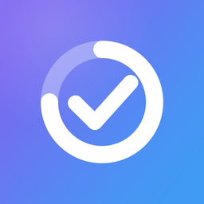

Build good habits and keep them, one calm day at a time. Reminders that repeat until you check a habit off, streaks and charts, Home and Lock Screen widgets, a pet that grows with you, and daily words in 14 languages.
All your data stays on your iPhone. No account, no ads, no tracking.
Support · Privacy Policy · Terms of Use
Полезные привычки, спокойно и каждый день. Напоминания, которые повторяются, пока не отметишь привычку, серии и графики, виджеты на экране Домой и блокировки, питомец, который растёт вместе с тобой, и слова на 14 языках. Все данные только на твоём iPhone: без аккаунта, рекламы и слежки.